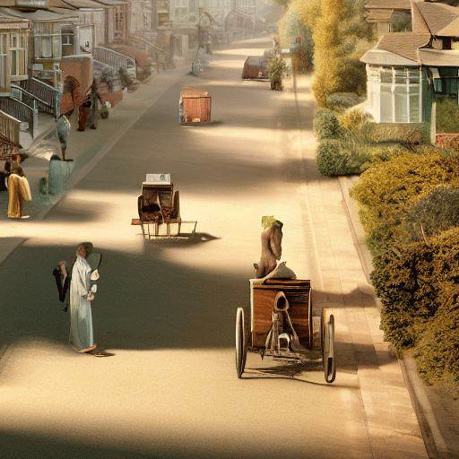
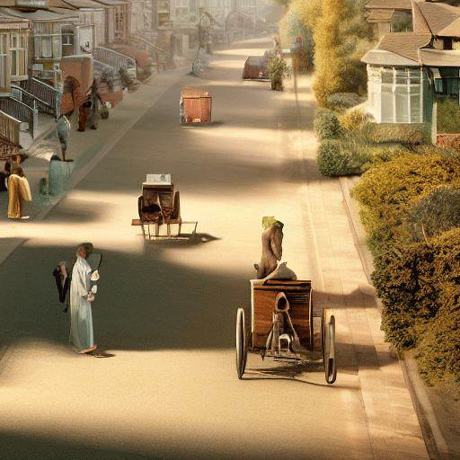

The unhealthy residential areas in the UK in 1900 in photorealistic style
Terraced Houses:
The houses look exquisite and beautiful
Blue sky and White Clouds:
They can symbolize the beauty and tranquility of nature
Clean Roads:
Pedestrians and horse-drawn carriages are walking on the roads
Sunshine:
Sunshine is often associated with brightness and warmth, and can symbolize positivity, happiness, and joy
 
